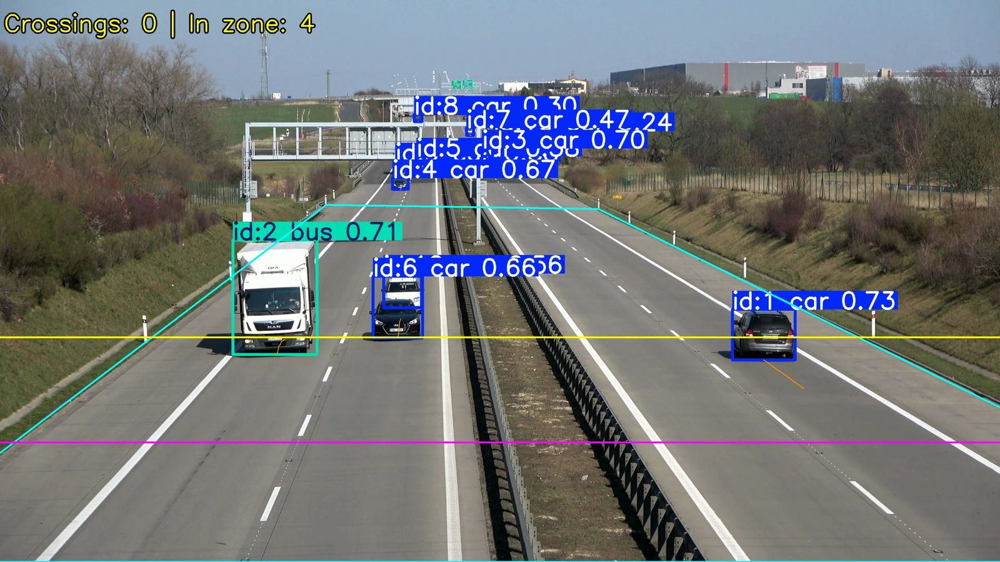
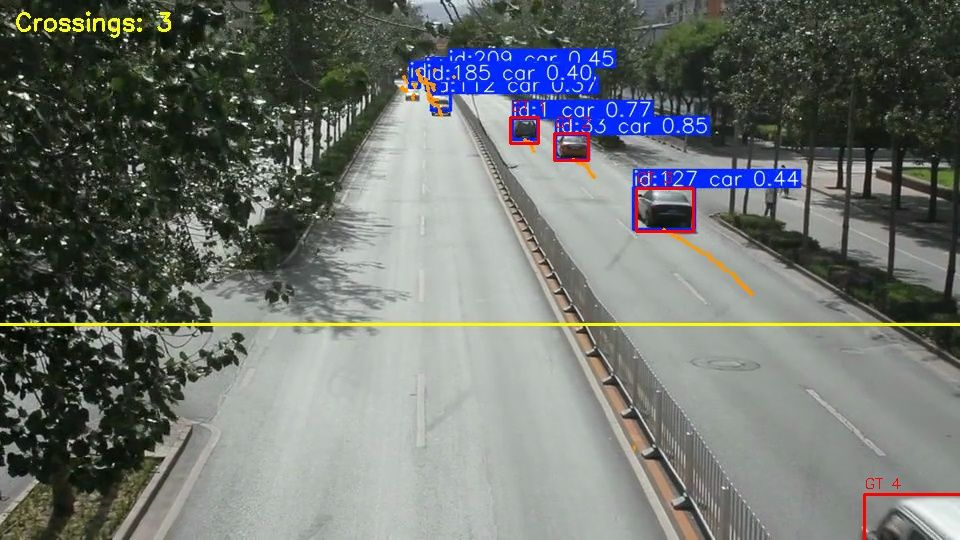
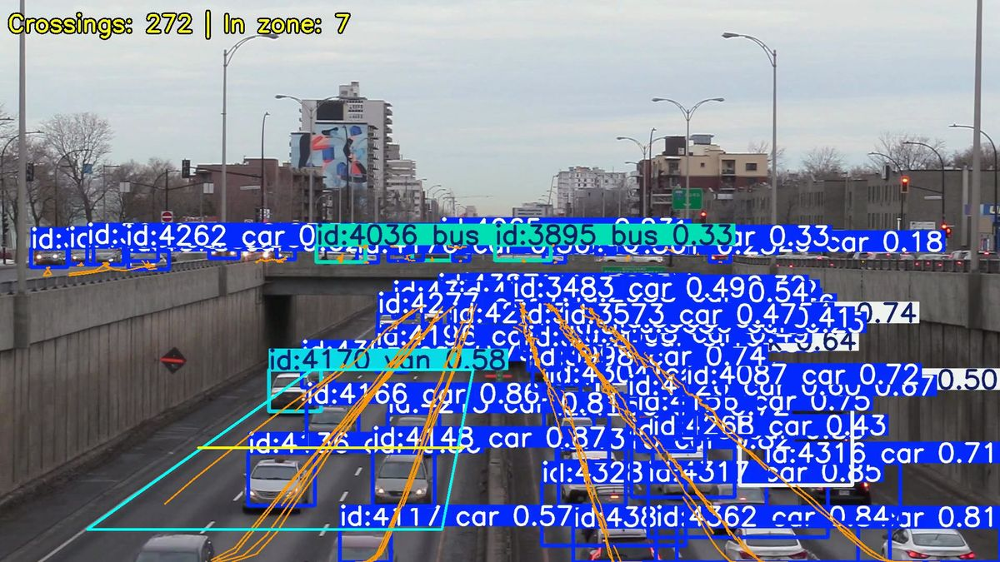
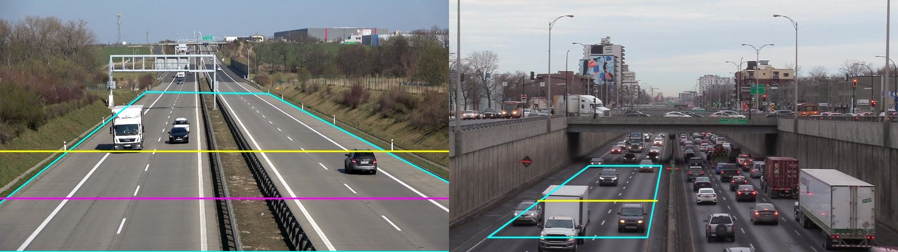
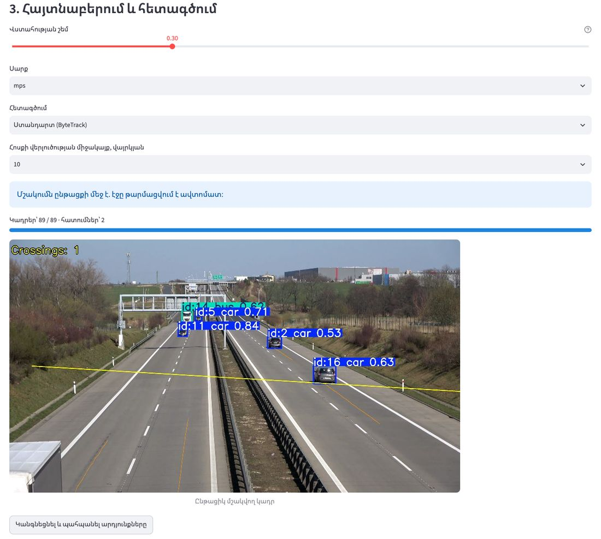

<meta charset="utf-8">
<title>Traffic CNN</title>
<meta name="claude:viewport-fit-sides" content="cover">
<meta name="description" content="Տեսախցիկով երթևեկության հոսքի վերլուծություն՝ YOLOv8, ByteTrack, արագություն, խտություն, LOS">
<link rel="preconnect" href="https://fonts.googleapis.com">
<link rel="preconnect" href="https://fonts.gstatic.com" crossorigin>
<link rel="stylesheet" href="https://fonts.googleapis.com/css2?family=Overpass:wght@400;600;800&family=Overpass+Mono:wght@400;600&family=Noto+Sans+Armenian:wght@400;600;700&display=swap">
<style>
/* Layout: one road-wide column; dashed lane-line dividers between sections; asphalt hero band. */
:root {
  --asphalt: #1f2a31; --asphalt-2: #2b3841; --marking: #f2b705; --teal: #14807a; --red: #c2412d;
  --bg: #fbfcfc; --surface: #eef2f3; --fg: #1b252b; --muted: #56636b; --line: #d7dfe2;
  --hero-fg: #f4f7f8; --hero-muted: #b9c5cb; --bar-0: #c9d3d8; --bar-1: #93a7b1; --bar-2: #4f7f8c; --bar-3: #14807a;
  --display: "Overpass", "Noto Sans Armenian", "Arial", sans-serif;
  --body: "Noto Sans Armenian", "Overpass", "Segoe UI", "Arial", sans-serif;
  --mono: "Overpass Mono", "SFMono-Regular", "Menlo", monospace;
}
@media (prefers-color-scheme: dark) { :root:not([data-theme="light"]) {
  --bg: #131b20; --surface: #1c262d; --fg: #e6edf0; --muted: #9fb0b8; --line: #2e3b44; --teal: #3fb3aa; --red: #e5735f;
  --bar-0: #3a4850; --bar-1: #56707c; --bar-2: #3f8f9c; --bar-3: #3fb3aa; color-scheme: dark } }
:root[data-theme="dark"] {
  --bg: #131b20; --surface: #1c262d; --fg: #e6edf0; --muted: #9fb0b8; --line: #2e3b44; --teal: #3fb3aa; --red: #e5735f;
  --bar-0: #3a4850; --bar-1: #56707c; --bar-2: #3f8f9c; --bar-3: #3fb3aa; color-scheme: dark }

:root[data-lang="hy"] [lang="en"], :root[data-lang="en"] [lang="hy"] { display: none !important; }
* { box-sizing: border-box; }
body { background: var(--bg); color: var(--fg); font-family: var(--body); font-size: 17px; line-height: 1.6; }
.wrap { max-width: 1120px; margin: 0 auto; padding-left: max(16px, env(safe-area-inset-left, 0px)); padding-right: max(16px, env(safe-area-inset-right, 0px)); }
h1, h2, h3 { font-family: var(--display); line-height: 1.15; text-wrap: balance; margin: 0; }
h2 { font-size: clamp(1.6rem, 3.2vw, 2.3rem); font-weight: 800; }
h3 { font-size: 1.15rem; font-weight: 700; }
p { margin: 0; max-width: 65ch; }
a { color: var(--teal); text-underline-offset: 3px; }
a:focus-visible, button:focus-visible { outline: 3px solid var(--marking); outline-offset: 2px; }
.eyebrow { font-family: var(--mono); font-size: .8rem; letter-spacing: .12em; text-transform: uppercase; color: var(--muted); }
.num { font-family: var(--display); font-weight: 800; font-variant-numeric: tabular-nums; }

/* Hero */
.hero { background: var(--asphalt); color: var(--hero-fg); }
.hero .wrap { padding-block: 22px 56px; display: grid; gap: 40px; }
.topbar { display: flex; justify-content: space-between; align-items: center; gap: 12px; flex-wrap: wrap; }
.brand { font-family: var(--display); font-weight: 800; letter-spacing: .02em; font-size: 1.1rem; }
.brand span { color: var(--marking); }
.lang { display: inline-flex; border: 1px solid #4a5a64; border-radius: 999px; overflow: hidden; }
.lang button { background: transparent; color: var(--hero-muted); border: 0; font: 600 .85rem var(--mono); padding: 6px 14px; cursor: pointer; }
.lang button[aria-pressed="true"] { background: var(--marking); color: var(--asphalt); }
.hero-grid { display: grid; grid-template-columns: 1fr 1.15fr; gap: 40px; align-items: center; }
.hero-grid > * { min-width: 0; }
.hero h1 { font-size: clamp(2rem, 4.6vw, 3.4rem); font-weight: 800; }
.hero h1 em { font-style: normal; color: var(--marking); }
.hero .lede { color: var(--hero-muted); margin-top: 18px; font-size: 1.08rem; }
.hero .eyebrow { color: var(--marking); margin-bottom: 14px; }
.cta { display: flex; gap: 12px; flex-wrap: wrap; margin-top: 28px; }
.btn { display: inline-block; font: 700 .95rem var(--display); padding: 12px 20px; border-radius: 6px; text-decoration: none; }
.btn-primary { background: var(--marking); color: var(--asphalt); }
.btn-ghost { color: var(--hero-fg); border: 1px solid #55656f; }
.shot { position: relative; margin: 0; }
.shot img { display: block; width: 100%; border-radius: 8px; }
.shot figcaption { font-size: .85rem; color: var(--hero-muted); margin-top: 10px; }
.counter { display: grid; grid-template-columns: repeat(4, 1fr); gap: 18px; border-top: 2px dashed #4a5a64; padding-top: 28px; }
.counter div { display: grid; gap: 2px; }
.counter .num { font-size: clamp(1.7rem, 3.4vw, 2.5rem); color: var(--hero-fg); }
.counter .num small { font-size: .55em; color: var(--marking); margin-left: 2px; }
.counter span:last-child { color: var(--hero-muted); font-size: .9rem; line-height: 1.4; }

/* Sections */
section { padding-block: 64px; }
section + section { border-top: 2px dashed var(--line); }
.head { display: grid; gap: 10px; margin-bottom: 32px; }
.head p { color: var(--muted); }
.steps { list-style: none; padding: 0; margin: 0; display: grid; grid-template-columns: repeat(5, 1fr); gap: 14px; counter-reset: step; }
.steps li { background: var(--surface); border-radius: 8px; padding: 18px; display: grid; gap: 8px; align-content: start; counter-increment: step; min-width: 0; }
.steps li::before { content: counter(step); font: 800 1rem var(--display); width: 34px; height: 34px; border-radius: 50%; display: grid; place-items: center; background: var(--marking); color: var(--asphalt); }
.steps p { font-size: .92rem; color: var(--muted); line-height: 1.5; }

.two { display: grid; grid-template-columns: 1fr 1fr; gap: 36px; align-items: start; }
.two > * { min-width: 0; }
.chart { display: grid; gap: 28px; }
.chart h3 { margin-bottom: 12px; }
.bars { display: grid; gap: 9px; }
.bar { display: grid; grid-template-columns: 11.5rem 1fr 3.4rem; gap: 10px; align-items: center; font-size: .88rem; }
.bar .label { color: var(--muted); overflow-wrap: anywhere; line-height: 1.3; }
.bar .track, .bar .fill { display: block; }
.bar .track { height: 18px; background: var(--surface); border-radius: 3px; overflow: hidden; }
.bar .fill { height: 100%; border-radius: 3px; }
.bar .val { font-family: var(--mono); font-variant-numeric: tabular-nums; text-align: right; }
.bar.best .label, .bar.best .val { color: var(--fg); font-weight: 700; }
.note { font-size: .88rem; color: var(--muted); }
.lessons { display: grid; gap: 12px; }
.lesson { display: grid; grid-template-columns: 9.5rem 1fr; gap: 14px; padding: 14px 0; border-bottom: 1px solid var(--line); }
.lesson:last-child { border-bottom: 0; }
.lesson .num { color: var(--teal); font-size: 1.05rem; white-space: nowrap; }
.lesson p { font-size: .95rem; }

.checks { display: grid; grid-template-columns: repeat(2, 1fr); gap: 20px; }
.check { background: var(--surface); border-radius: 10px; overflow: hidden; display: grid; grid-template-rows: auto 1fr; min-width: 0; }
.check img { display: block; width: 100%; aspect-ratio: 16 / 9; object-fit: cover; max-width: 100%; }
.check .body { padding: 20px; display: grid; gap: 8px; align-content: start; }
.check .num { font-size: 2.1rem; color: var(--teal); }
.check.warn .num { color: var(--red); }
.check p { font-size: .95rem; color: var(--muted); }

.wide-img { display: block; width: 100%; border-radius: 8px; margin-bottom: 24px; }
.metrics { display: grid; grid-template-columns: repeat(4, 1fr); gap: 20px; }
.metrics div { display: grid; gap: 2px; }
.metrics .num { font-size: 2rem; color: var(--teal); }
.metrics span:last-child { font-size: .9rem; color: var(--muted); line-height: 1.4; }

.features { list-style: none; padding: 0; margin: 0; display: grid; gap: 12px; }
.features li { padding-left: 22px; position: relative; }
.features li::before { content: ""; position: absolute; left: 0; top: .62em; width: 10px; height: 4px; background: var(--marking); border-radius: 1px; }
.app-img { display: block; width: 100%; border-radius: 8px; border: 1px solid var(--line); }

.code { background: var(--asphalt); color: #e8eef1; border-radius: 8px; padding: 16px 18px; font: .9rem/1.7 var(--mono); position: relative; overflow-x: auto; }
.code pre { margin: 0; white-space: pre; }
.code .c { color: #8fa1ab; }
.copy { position: absolute; top: 10px; right: 10px; background: var(--asphalt-2); color: #e8eef1; border: 1px solid #4a5a64; border-radius: 5px; font: 600 .78rem var(--mono); padding: 5px 10px; cursor: pointer; }
.limits { display: grid; grid-template-columns: repeat(2, 1fr); gap: 10px 32px; padding: 0; margin: 0; list-style: none; }
.limits li { font-size: .95rem; color: var(--muted); padding-left: 18px; position: relative; }
.limits li::before { content: "–"; position: absolute; left: 0; }
footer { background: var(--asphalt); color: var(--hero-muted); font-size: .9rem; }
footer .wrap { padding-block: 28px; display: flex; justify-content: space-between; gap: 12px; flex-wrap: wrap; }
footer a { color: var(--marking); }

@media (max-width: 900px) {
  .hero-grid, .two { grid-template-columns: 1fr; }
  .steps { grid-template-columns: 1fr 1fr; }
  .counter, .metrics { grid-template-columns: 1fr 1fr; }
}
@media (max-width: 560px) {
  .steps, .checks, .limits { grid-template-columns: 1fr; }
  .bar { grid-template-columns: 1fr 3.2rem; }
  .bar .label { grid-column: 1 / -1; }
  .lesson { grid-template-columns: 1fr; gap: 4px; }
  section { padding-block: 48px; }
}
@media (prefers-reduced-motion: no-preference) {
  .bar .fill { transform-origin: left; animation: grow .9s ease-out both; }
  @keyframes grow { from { transform: scaleX(.15); } to { transform: scaleX(1); } }
}
</style>

<header class="hero">
  <div class="wrap">
    <div class="topbar">
      <div class="brand">TRAFFIC<span>·</span>CNN</div>
      <div class="lang" role="group" aria-label="Language">
        <button type="button" id="lang-hy" data-set="hy" aria-pressed="true">ՀԱՅ</button>
        <button type="button" id="lang-en" data-set="en" aria-pressed="false">ENG</button>
      </div>
    </div>
    <div class="hero-grid">
      <div>
        <div class="eyebrow"><span lang="hy">Ավարտական աշխատանք · 2026</span><span lang="en">Diploma project · 2026</span></div>
        <h1><span lang="hy">Երթևեկության հոսքը՝ <em>սովորական տեսախցիկից</em></span><span lang="en">Traffic flow from an <em>ordinary camera</em></span></h1>
        <p class="lede"><span lang="hy">Ծրագիրը տեսանյութում հայտնաբերում և հետագծում է մեքենաները, հաշվում գծի հատումները և չափում ինտենսիվությունը, արագությունը, խտությունը և սպասարկման մակարդակը (LOS)։</span><span lang="en">The tool detects and tracks vehicles in video, counts line crossings and measures flow, speed, density and level of service (LOS).</span></p>
        <div class="cta">
          <a class="btn btn-primary" href="https://github.com/marrr862/traffic-cnn" target="_blank" rel="noopener">GitHub</a>
          <a class="btn btn-ghost" href="https://github.com/marrr862/traffic-cnn/releases/tag/v1.0" target="_blank" rel="noopener"><span lang="hy">Մոդելներ (v1.0)</span><span lang="en">Models (v1.0)</span></a>
        </div>
      </div>
      <figure class="shot">
        
        <figcaption><span lang="hy">Մայրուղի, 4K. դեղին՝ հաշվման գիծ, երկնագույն՝ տրամաչափված գոտի 25 × 250 մ</span><span lang="en">Highway, 4K: yellow counting line, cyan calibrated 25 × 250 m zone</span></figcaption>
      </figure>
    </div>
    <div class="counter">
      <div><span class="num">90,2<small>%</small></span><span><span lang="hy">mAP50 ճանապարհային տեսախցիկներում (MIO-TCD)</span><span lang="en">mAP50 on road cameras (MIO-TCD)</span></span></div>
      <div><span class="num">99,0<small>%</small></span><span><span lang="hy">հայտնաբերված մեքենաներ անկախ UA-DETRAC տեսանյութում</span><span lang="en">vehicles found on an unseen UA-DETRAC clip</span></span></div>
      <div><span class="num">10/10</span><span><span lang="hy">ճիշտ հատում մայրուղու տեսանյութում</span><span lang="en">correct crossings on the highway video</span></span></div>
      <div><span class="num">2,8<small>%</small></span><span><span lang="hy">արագության երկու անկախ եղանակների տարբերություն</span><span lang="en">gap between two independent speed methods</span></span></div>
    </div>
  </div>
</header>

<main>
  <section>
    <div class="wrap">
      <div class="head">
        <div class="eyebrow"><span lang="hy">Ինչպես է աշխատում</span><span lang="en">How it works</span></div>
        <h2><span lang="hy">Կադրից մինչև մեքենա/ժամ</span><span lang="en">From frame to vehicles per hour</span></h2>
      </div>
      <ol class="steps">
        <li><h3><span lang="hy">Տեսանյութ</span><span lang="en">Video</span></h3><p><span lang="hy">Ֆայլ կամ ուղիղ հոսք՝ RTSP, HLS, YouTube</span><span lang="en">File or live stream: RTSP, HLS, YouTube</span></p></li>
        <li><h3><span lang="hy">Հայտնաբերում</span><span lang="en">Detection</span></h3><p><span lang="hy">YOLOv8 CNN, 5 դաս՝ car, van, truck, bus, motorcycle</span><span lang="en">YOLOv8 CNN, 5 classes: car, van, truck, bus, motorcycle</span></p></li>
        <li><h3><span lang="hy">Հետագծում</span><span lang="en">Tracking</span></h3><p><span lang="hy">ByteTrack-ը յուրաքանչյուր մեքենային տալիս է ID</span><span lang="en">ByteTrack gives every vehicle an ID</span></p></li>
        <li><h3><span lang="hy">Հաշվարկ</span><span lang="en">Counting</span></h3><p><span lang="hy">Գծի հատում հիստերեզիսով, կրկնակի ID-ների զտիչ</span><span lang="en">Line crossing with hysteresis and a duplicate-ID guard</span></p></li>
        <li><h3><span lang="hy">Չափում</span><span lang="en">Measurement</span></h3><p><span lang="hy">Հոմոգրաֆիա 4 կետով՝ կմ/ժ, մեքենա/կմ, LOS, q = k·v</span><span lang="en">4-point homography: km/h, veh/km, LOS, q = k·v</span></p></li>
      </ol>
    </div>
  </section>

  <section>
    <div class="wrap two">
      <div class="chart">
        <div class="head" style="margin-bottom:0">
          <div class="eyebrow"><span lang="hy">Մոդելներ</span><span lang="en">Models</span></div>
          <h2><span lang="hy">Մեկ մոդել՝ երկու տիրույթի համար</span><span lang="en">One model for both viewpoints</span></h2>
          <p><span lang="hy">mAP50 թեստային ընտրանքում։ Միայն անօդաչու սարքի պատկերներով ուսուցանված մոդելը ճանապարհային տեսախցիկներում գրեթե չի աշխատում։</span><span lang="en">Test mAP50. A model trained only on drone images barely works on road cameras.</span></p>
        </div>
        <div>
          <h3><span lang="hy">VisDrone (վերևից), 960 պքս</span><span lang="en">VisDrone (top-down), 960 px</span></h3>
          <div class="bars">
            <div class="bar"><span class="label">hires-960 · YOLOv8n</span><span class="track"><span class="fill" style="width:45.9%;background:var(--bar-0)"></span></span><span class="val">45,9</span></div>
            <div class="bar"><span class="label">road-combined · YOLOv8n</span><span class="track"><span class="fill" style="width:43.0%;background:var(--bar-1)"></span></span><span class="val">43,0</span></div>
            <div class="bar"><span class="label">road-yolov8s</span><span class="track"><span class="fill" style="width:48.0%;background:var(--bar-2)"></span></span><span class="val">48,0</span></div>
            <div class="bar best"><span class="label">road-yolov8s-long ★</span><span class="track"><span class="fill" style="width:51.4%;background:var(--bar-3)"></span></span><span class="val">51,4</span></div>
          </div>
        </div>
        <div>
          <h3><span lang="hy">MIO-TCD (ճանապարհային տեսախցիկ), 640 պքս</span><span lang="en">MIO-TCD (road camera), 640 px</span></h3>
          <div class="bars">
            <div class="bar"><span class="label">hires-960 · YOLOv8n</span><span class="track"><span class="fill" style="width:15.1%;background:var(--bar-0)"></span></span><span class="val">15,1</span></div>
            <div class="bar"><span class="label">road-combined · YOLOv8n</span><span class="track"><span class="fill" style="width:83.7%;background:var(--bar-1)"></span></span><span class="val">83,7</span></div>
            <div class="bar"><span class="label">road-yolov8s</span><span class="track"><span class="fill" style="width:86.8%;background:var(--bar-2)"></span></span><span class="val">86,8</span></div>
            <div class="bar best"><span class="label">road-yolov8s-long ★</span><span class="track"><span class="fill" style="width:90.2%;background:var(--bar-3)"></span></span><span class="val">90,2</span></div>
          </div>
        </div>
        <p class="note"><span lang="hy">Սանդղակը՝ 0–100%։ ★ առաջարկվող մոդել։</span><span lang="en">Scale 0–100%. ★ recommended model.</span></p>
      </div>
      <div>
        <div class="head">
          <div class="eyebrow"><span lang="hy">10 ուսուցման փորձ</span><span lang="en">10 training experiments</span></div>
          <h2><span lang="hy">Ինչն է իրականում օգնում</span><span lang="en">What actually helps</span></h2>
        </div>
        <div class="lessons">
          <div class="lesson"><span class="num">2,6 → 13,8%</span><p><span lang="hy"><b>Ուսուցման փոխանցում։</b> COCO կշիռներից սկսած մոդելը սովորում է, իսկ զրոյից՝ գրեթե ոչ։</span><span lang="en"><b>Transfer learning.</b> Starting from COCO weights works; training from scratch barely learns.</span></p></div>
          <div class="lesson"><span class="num">34,7 → 45,9%</span><p><span lang="hy"><b>Մուտք 960 պքս։</b> Փոքր մեքենաները պահպանում են մանրամասները։</span><span lang="en"><b>960 px input.</b> Small vehicles keep their detail.</span></p></div>
          <div class="lesson"><span class="num">15,1 → 83,7%</span><p><span lang="hy"><b>Ճանապարհային տվյալներ։</b> MIO-TCD-ի ավելացումը վերացնում է տիրույթի տեղաշարժը։</span><span lang="en"><b>Road data.</b> Adding MIO-TCD removes the domain gap.</span></p></div>
          <div class="lesson"><span class="num">43,0 → 51,4%</span><p><span lang="hy"><b>YOLOv8s և երկար ուսուցում։</b> Ավելի մեծ մոդել և ևս 12 դարաշրջան։</span><span lang="en"><b>YOLOv8s and longer training.</b> A larger model plus 12 more epochs.</span></p></div>
          <div class="lesson"><span class="num">±0,1</span><p><span lang="hy"><b>Պարզ ընդլայնում։</b> Էական օգուտ չի տվել։</span><span lang="en"><b>Simple augmentation.</b> No real gain.</span></p></div>
        </div>
      </div>
    </div>
  </section>

  <section>
    <div class="wrap">
      <div class="head">
        <div class="eyebrow"><span lang="hy">Ստուգումներ</span><span lang="en">Checks</span></div>
        <h2><span lang="hy">Ոչ միայն mAP. ստուգվում են հաշվարկը և ֆիզիկան</span><span lang="en">Beyond mAP: counting and physics are checked too</span></h2>
      </div>
      <div class="checks">
        <article class="check">
          
          <div class="body">
            <span class="num">5 / 5</span>
            <h3><span lang="hy">Անկախ տեսարան UA-DETRAC</span><span lang="en">Unseen UA-DETRAC scene</span></h3>
            <p><span lang="hy">Տեսանյութը ուսուցման մեջ չի օգտագործվել. մոդելը հայտնաբերել է մեքենաների 99,0%-ը (AP50 97,0%) և ճիշտ հաշվել բոլոր հատումները։</span><span lang="en">The clip was never used in training: the model found 99.0% of vehicles (AP50 97.0%) and counted every crossing correctly.</span></p>
          </div>
        </article>
        <article class="check warn">
          
          <div class="body">
            <span class="num">709 <span style="font-size:.5em">km/h</span></span>
            <h3><span lang="hy">Արագացված տեսանյութը բացահայտվում է</span><span lang="en">Time-lapse video is flagged</span></h3>
            <p><span lang="hy">449 հատում 42 վայրկյանում և 37 995 մեքենա/ժամ. ծրագիրը նկատում է, որ դա ֆիզիկապես անհնար է, և նախազգուշացնում։</span><span lang="en">449 crossings in 42 seconds, 37,995 veh/h: the tool notices this is physically impossible and warns the user.</span></p>
          </div>
        </article>
      </div>
    </div>
  </section>

  <section>
    <div class="wrap">
      <div class="head">
        <div class="eyebrow"><span lang="hy">Չափումներ</span><span lang="en">Measurements</span></div>
        <h2><span lang="hy">Պիքսելներից՝ մետրեր և կմ/ժ</span><span lang="en">From pixels to metres and km/h</span></h2>
        <p><span lang="hy">Օգտագործողը կադրի վրա նշում է ճանապարհի 4 կետ և իրական չափերը։ Ձախում՝ մայրուղի (25 × 250 մ, 4 գոտի), աջում՝ քաղաքային ճանապարհ (10,8 × 120 մ, 3 գոտի)։</span><span lang="en">The user marks 4 road points and the real size. Left: highway (25 × 250 m, 4 lanes); right: urban road (10.8 × 120 m, 3 lanes).</span></p>
      </div>
      
      <div class="metrics">
        <div><span class="num">1673</span><span><span lang="hy">մեքենա/ժամ ինտենսիվություն</span><span lang="en">veh/h flow</span></span></div>
        <div><span class="num">112,8</span><span><span lang="hy">կմ/ժ տարածական միջին արագություն</span><span lang="en">km/h space-mean speed</span></span></div>
        <div><span class="num">2,8</span><span><span lang="hy">մեքենա/կմ/գոտի · LOS A</span><span lang="en">veh/km/lane · LOS A</span></span></div>
        <div><span class="num">+32%</span><span><span lang="hy">q-ի և k·v-ի տարբերություն 21,5 վ դիտարկման դեպքում</span><span lang="en">q vs k·v over a 21.5 s clip</span></span></div>
      </div>
    </div>
  </section>

  <section>
    <div class="wrap two">
      
      <div>
        <div class="head">
          <div class="eyebrow"><span lang="hy">Ծրագիրը</span><span lang="en">The app</span></div>
          <h2><span lang="hy">Հայերեն միջերես՝ առանց կոդի</span><span lang="en">Armenian interface, no code needed</span></h2>
        </div>
        <ul class="features">
          <li><span lang="hy">Տեսանյութի ֆայլ կամ ուղիղ հոսք</span><span lang="en">Video file or live stream</span></li>
          <li><span lang="hy">Հաշվման գծեր և տրամաչափում մկնիկով՝ կադրի վրա</span><span lang="en">Counting lines and calibration drawn on the frame</span></li>
          <li><span lang="hy">Սալիկային ռեժիմ փոքր մեքենաների համար (VisDrone 52,2%)</span><span lang="en">Tiled mode for small vehicles (VisDrone 52.2%)</span></li>
          <li><span lang="hy">Նշագրված տեսանյութ, ջերմային քարտեզ, հետագծեր</span><span lang="en">Annotated video, heatmap, trajectories</span></li>
          <li><span lang="hy">CSV և JSON արտահանում, հոսքը ըստ միջակայքերի</span><span lang="en">CSV and JSON export, flow per interval</span></li>
          <li><span lang="hy">Հաշվարկի ստուգում էտալոնային նշագրմամբ</span><span lang="en">Counting check against a reference annotation</span></li>
          <li><span lang="hy">73 ավտոմատ թեստ</span><span lang="en">73 automated tests</span></li>
        </ul>
      </div>
    </div>
  </section>

  <section>
    <div class="wrap">
      <div class="head">
        <div class="eyebrow"><span lang="hy">Գործարկում</span><span lang="en">Run it</span></div>
        <h2><span lang="hy">Երեք րոպեում՝ ձեր համակարգչում</span><span lang="en">On your computer in three minutes</span></h2>
        <p><span lang="hy">Python 3.10–3.13։ Վերջին հրամանը ներբեռնում է չորս մոդելները և երկու ցուցադրական տեսանյութերը։</span><span lang="en">Python 3.10–3.13. The download step fetches the four models and two demo videos.</span></p>
      </div>
      <div class="code">
        <button type="button" class="copy" id="copy-install">Copy</button>
<pre id="install">git clone https://github.com/marrr862/traffic-cnn.git
cd traffic-cnn
python3 -m venv .venv && source .venv/bin/activate
pip install -e .
python scripts/download_assets.py
streamlit run app.py   <span class="c"># http://127.0.0.1:8501</span></pre>
      </div>
    </div>
  </section>

  <section>
    <div class="wrap">
      <div class="head">
        <div class="eyebrow"><span lang="hy">Սահմանափակումներ</span><span lang="en">Limitations</span></div>
        <h2><span lang="hy">Ինչ դեռ ստուգված չէ</span><span lang="en">What is not yet proven</span></h2>
      </div>
      <ul class="limits">
        <li><span lang="hy">Բոլոր տեսանյութերը ցերեկային են. գիշերը և վատ եղանակին ճշտությունը չի գնահատվել</span><span lang="en">All clips are daytime; night and bad weather are untested</span></li>
        <li><span lang="hy">Արտաքին ստուգում՝ 12 վայրկյան և 5 հատում</span><span lang="en">External check covers 12 seconds and 5 crossings</span></li>
        <li><span lang="hy">Արագությունը չի համեմատվել ռադարի հետ</span><span lang="en">Speed is not compared against a radar</span></li>
        <li><span lang="hy">truck և bus դասերը երբեմն շփոթվում են</span><span lang="en">Truck and bus are sometimes confused</span></li>
      </ul>
    </div>
  </section>
</main>

<footer>
  <div class="wrap">
    <span><span lang="hy">Ղազարյան Մարիամ Սարգիսի · Երևան 2026</span><span lang="en">Mariam Ghazaryan · Yerevan 2026</span></span>
    <a href="https://github.com/marrr862/traffic-cnn" target="_blank" rel="noopener">github.com/marrr862/traffic-cnn</a>
  </div>
</footer>

<script>
(function () {
  var root = document.documentElement;
  function setLang(lang) {
    root.dataset.lang = lang;
    root.lang = lang;
    document.querySelectorAll('.lang button').forEach(function (b) { b.setAttribute('aria-pressed', String(b.dataset.set === lang)); });
    document.getElementById('copy-install').textContent = lang === 'hy' ? 'Պատճենել' : 'Copy';
    try { localStorage.setItem('traffic-cnn-lang', lang); } catch (e) {}
  }
  var saved = null;
  try { saved = localStorage.getItem('traffic-cnn-lang'); } catch (e) {}
  setLang(saved === 'en' ? 'en' : 'hy');
  document.querySelectorAll('.lang button').forEach(function (b) { b.addEventListener('click', function () { setLang(b.dataset.set); }); });
  var copy = document.getElementById('copy-install');
  copy.addEventListener('click', function () {
    var text = document.getElementById('install').innerText.replace(/\s+# http.*$/m, '');
    var done = function () { copy.textContent = root.dataset.lang === 'hy' ? 'Պատճենված է' : 'Copied'; };
    if (navigator.clipboard && navigator.clipboard.writeText) {
      navigator.clipboard.writeText(text).then(done, function () { selectText(); });
    } else { selectText(); }
  });
  function selectText() {
    var range = document.createRange(); range.selectNodeContents(document.getElementById('install'));
    var sel = window.getSelection(); sel.removeAllRanges(); sel.addRange(range);
  }
})();
</script>
